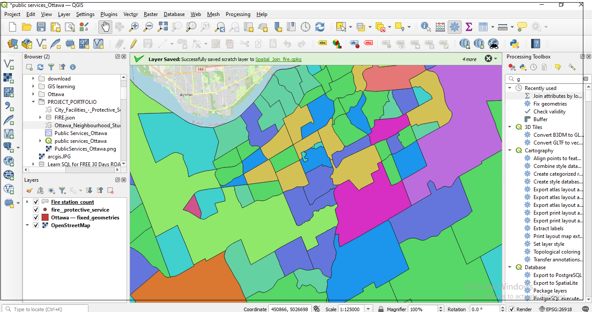
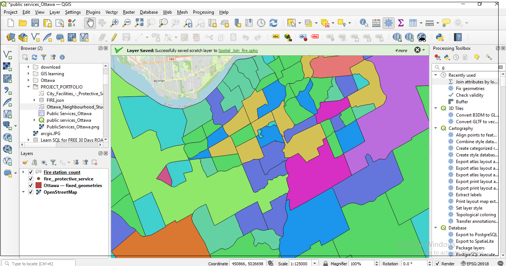

Mapping and Spatial Analysis of Public Facilities in the City of Ottawa
Project Description
This project focuses on the mapping and spatial analysis of public facilities in the City of Ottawa, using QGIS—a powerful open-source Geographic Information System. The project was developed to reinforce practical GIS skills acquired through a recently completed QGIS course. It highlights how spatial data can be effectively visualized and analyzed to support urban planning and community infrastructure assessment.
Public facilities such as schools, libraries, community centers, and emergency services play a critical role in urban life. Understanding their spatial distribution and accessibility is essential for promoting equitable access and improving service delivery across different neighborhoods.
Key Highlights
- Data Source: All geospatial data layers were sourced from the City of Ottawa Open Data Portal, ensuring up-to-date and reliable information for mapping public infrastructure.
- Map Visualization: The initial phase involved importing shapefiles and other spatial datasets into QGIS to visualize the geographic distribution of public facilities across Ottawa. Styling and symbology techniques were applied to categorize facilities by type and enhance map readability.
- Layout Design: Professional map layouts were created using the QGIS Print Layout tool, incorporating key cartographic elements such as legends, scale bars, north arrows, and titles to produce publication-ready maps.
-
Spatial Analysis: Conducted a focused analysis on emergency service coverage by:
- Creating buffer zones around fire stations to assess their service coverage area
- Performing spatial joins to count the number of public facilities located within proximity to fire stations
- Identifying potential underserved areas that may require improved emergency infrastructure
-
Skill Development: This project strengthened my ability to:
- Work with vector data and perform geoprocessing tasks in QGIS
- Apply spatial queries and analytical operations such as buffering, selection by location, and attribute joins
- Design cartographically effective and informative static maps for reports or presentations
Output Preview
The following maps display the spatial distribution of various public facilities across Ottawa. Each map layout was created using QGIS’s print composer, combining both visualization and spatial analysis techniques to communicate meaningful insights.
 
